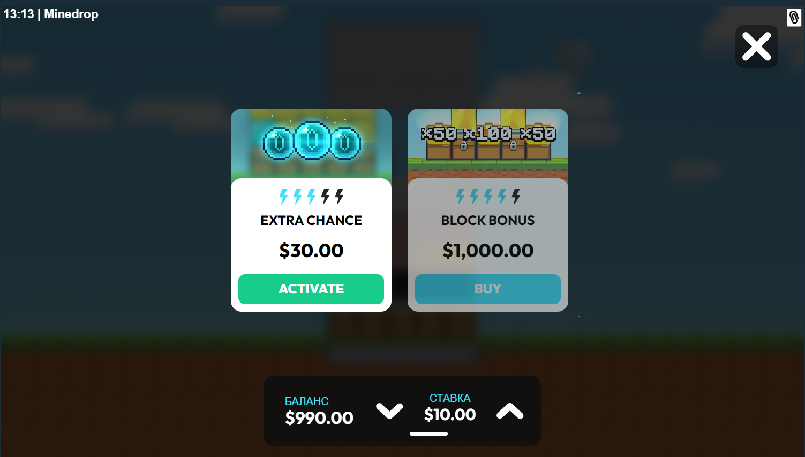

Mine Drop Demo: тестируйте игру без риска
Режим mine drop demo нужен не только новичкам. Даже опытные пользователи запускают демо, чтобы проверить текущую динамику, привыкнуть к интерфейсу и подобрать темп сессии. Поисковый спрос на mine drop demo и play mine drop стабильно высокий, потому что люди хотят сначала понять механику, а уже потом принимать решение о депозите.

Практичный сценарий простой: сначала 20-30 пробных раундов без цели заработать, затем короткая пауза и анализ частоты попаданий. После этого можно моделировать рабочую сессию на условный банкролл. Такой подход помогает избежать переоценки шансов и формирует основу для mine drop strategy. Демо также полезно перед переходом в mine drop online, если вы планируете играть с телефона.
Как использовать demo с максимальной пользой
- фиксируйте длину сессии и результат каждой серии;
- не меняйте ставку каждые 2-3 спина без причины;
- отмечайте, где начинаются импульсивные решения;
- переходите к real mode только после понятного плана.
Внутренние переходы
FAQ
Можно ли играть в mine drop demo бесплатно?Да, демо-режим не требует реальной ставки.
Demo и реальная версия отличаются?Механика совпадает, но в демо нет финансового риска.
Когда переходить в mine drop casino?Когда у вас уже есть базовый план ставок и лимитов.
Нужна ли регистрация для демо?Обычно нет, но условия зависят от площадки.
Где посмотреть правила?Откройте страницу как играть.